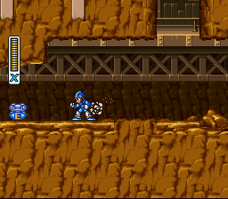
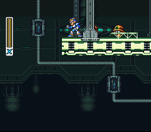
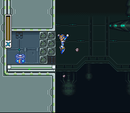
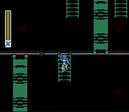
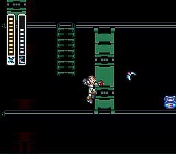
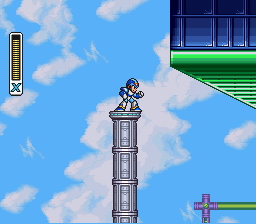
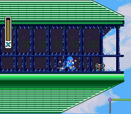

O que são os Sub Tanks?
Os Sub Tanks são reservatórios de energia que você pode encontrar em algumas fases específicas.
Diferente dos Heart Tanks, eles não aumentam sua vida diretamente, mas armazenam energia extra que pode ser usada a
qualquer momento quando sua barra principal estiver baixa.
Para enchê-los, basta coletar itens de cura (pequenos ou grandes) quando sua vida estiver cheia.
Eles são essenciais para sobrevivência nas fases finais e chefes mais difíceis.

Armored Armadillo
localizado no primeiro robô que destroi as paredes, atrás dele estará o Sub Tank.


Flame Mammoth
Localizado onde tem muitos inimigos que jogam picaretas em você, lá em cima, pule da plataforma e quebre a parede de pedras com o upgrade das pernas ou capacete


Spark Mandrill
No começo da fase, suba a primeira escada, desça a segunda e então vá até a terceira, lá verá o sub tank, use o bumerangue do Bommer Kuwanger pulando para puxar ele até você


Storm Eagle
No começo a fase, aproveite a a plataforma do primeiro robô verde que atira, mate ele e suba na plataforma, ela vai subir, então quebre o vidro e mate o robô que está lá, no final terá o sub tank